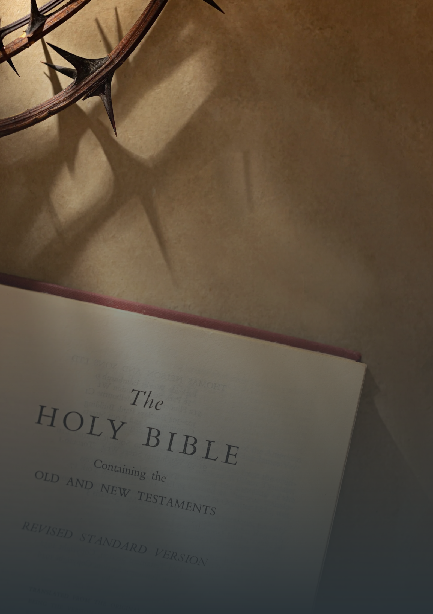

── UMA JORNADA ── UMA ESCOLHA
"Busquem, pois, em primeiro lugar o Reino de Deus e a sua justiça, e todas essas coisas lhes serão acrescentadas." (Mateus 6:33)
"Busquem, pois, em primeiro lugar o Reino de Deus e a sua justiça, e todas essas coisas lhes serão acrescentadas." (Mateus 6:33)
Disse Jesus aos judeus que haviam crido nele: "Se vocês permanecerem firmes na minha palavra, verdadeiramente serão meus discípulos. E conhecerão a verdade, e a verdade os libertará". João 8:31-32


"Vocês, porém, são geração eleita, sacerdócio real, nação santa, povo exclusivo de Deus, para anunciar as grandezas daquele que os chamou das trevas para a sua maravilhosa luz. Antes vocês nem sequer eram povo, mas agora são povo de Deus; não haviam recebido misericórdia, mas agora a receberam." 1 Pedro 2:9-10
"Ora, as obras da carne são manifestas: imoralidade sexual, impureza e libertinagem; idolatria e feitiçaria; ódio, discórdia, ciúmes, ira, egoísmo, dissensões, facções e inveja; embriaguez, orgias e coisas semelhantes. Eu os advirto, como antes já os adverti: Aqueles que praticam essas coisas não herdarão o Reino de Deus." Gálatas 5:19-21


"Toda a Escritura é inspirada por Deus e útil para o ensino, para a repreensão, para a correção e para a instrução na justiça, para que o homem de Deus seja apto e plenamente preparado para toda boa obra." 2 Timóteo 3:16-17